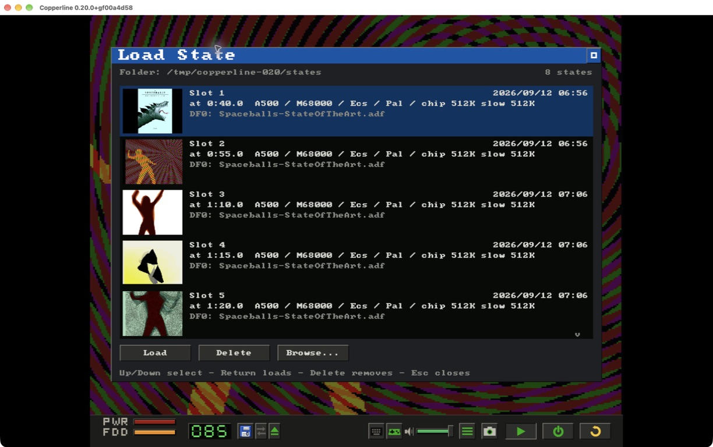

Copperline 0.20.0: Netplay, a new debugging workspace, and RetroArch
Copperline 0.20.0 is out. This release adds two-player Netplay on desktop and in the browser, brings the Amiga display and inspectors together in a new debugging workspace, and adds a libretro core for RetroArch.
There are save-state thumbnails, GIF clips, new peripherals and improvements to Paula audio too. Save states from 0.19 and earlier need recreating; disk images and ordinary in-game saves are unaffected.
Two-player Netplay
Each player runs a complete emulated Amiga. Copperline exchanges input, predicts late packets and rolls back to replay frames when a prediction was wrong. Desktop Internet invitations use encrypted connections with NAT traversal and relay fallback, so port forwarding is normally unnecessary. Direct UDP connections remain available.
The host sends the machine settings, ROMs and supported game media to the joining player. Both machines then cold-boot together. Floppy changes during play pause both peers, transfer the replacement and resume at the same emulated frame. IPF protection-track timing survives the transfer too.
The browser has invitation links and QR sharing, automatic setup transfer, and synchronized DF0/DF1 swaps. Two-mouse games work on both frontends, including two-player Lemmings. In the browser, choose Advanced → Controllers → Two mice in Netplay before hosting.
Watch the two-player Lemmings Netplay video on YouTube.
Use the same Copperline build on both machines. Desktop and browser peers cannot connect to each other, and mixed operating systems and browser engines still need qualification. Native Netplay supports two players. See the Netplay guide or open it in the browser.
The Debug workspace
The Amiga display now sits beside the debugger, Frame Analyzer and Console in the main window. Switch between Play and Debug, drag the divider to give either side more space, and keep the picture visible while inspecting the machine.

The shared inspector UI has selectable text, normal copy/paste and resizable CPU panes. Edit memory in hex or ASCII, follow addresses between views, and close individual inspector tabs. Tabs show which inspectors are open and which are capturing. Returning to Play preserves their state for next time.

The debugger also steps a CPU out of STOP to the interrupt that wakes it. Disassembler fixes cover opcode collisions, instruction lengths, processor-specific instructions and absolute-word addresses. The Debug workspace chapter covers the controls; source debugging through VS Code remains available.
Copperline in RetroArch
The new libretro core supports A500, A1200 and CD32 machines, floppy and CD playlists, WHDLoad packages, keyboard/mouse/gamepad input and save states. AROS is embedded, and games that need Kickstart can use a ROM supplied in the frontend's system directory.
RetroArch's disk controls handle swapping. Floppy writes live in the frontend's save directory, CD32 EEPROM is exposed as save RAM, and the memory map supports memory inspection and cheat search. Two-gamepad Netplay uses RetroArch's own session controls.
Core ZIPs for Linux x86-64, macOS Apple Silicon and Windows x86-64 are on the release page. Install them manually for now; the core is not in RetroArch's Online Updater. See the libretro guide.
Saves and clips
The Load State browser now shows thumbnails, the machine, the media and the emulated time for each snapshot. States use individually versioned subsystem chunks, allowing many future changes to be handled without invalidating the entire file. The transition means states from 0.19 and earlier must be recreated.

The desktop can save the last few seconds as a GIF. Headless runs can schedule the same kind of clip at a chosen emulated time with --gif-after and --gif-seconds.
Hardware and audio
- A parallel-port four-player joystick adapter for local play, plus light pen and light gun input.
- A600/A1200 PCMCIA SRAM and CompactFlash/IDE cards, compressed CHD hard disks and real host serial ports on Paula's UART.
- Matt Harlum's SF2000 SD controller, including the SD-over-SPI interface and boot-ROM support.
- Host/guest clipboard text sharing, enabled in ordinary desktop sessions and switchable in Input Settings. Headless and Netplay sessions leave it off.
- Band-limited Paula mixing to reduce resampling artefacts, with mixer phase tied to the emulated clock.
- Fixes for copperhf data-cache coherency, Intel Mac fullscreen borders and desktop Netplay display stalls during mouse movement.
- m68k 0.13.0 and refreshed AROS ROMs with lower guest-memory use.
Testing Amiga programs
Headless runs can type text, compare scheduled screenshots against expected images and return a guest program's AmigaDOS exit code to the host shell. Guest coverage exports as lcov. copperline-ctl diverge compares two builds or configurations and narrows a mismatch through its first frame to the differing instruction, memory or timing result.
The desktop downloads now include copperline-ctl and copperline-import-uae. Thanks to Matt Harlum for the SF2000 controller, Simon Dick for the copperhf fix, Volker Schwaberow for the disassembler corrections, and everyone testing and supporting Copperline.
Download Copperline 0.20.0 Try in your browser
Desktop downloads cover macOS (Apple Silicon and Intel), Linux x86-64 and Windows x64/ARM64. Homebrew users can run brew update and brew upgrade copperline. The full release notes include upgrade details, and the changelog lists every change.